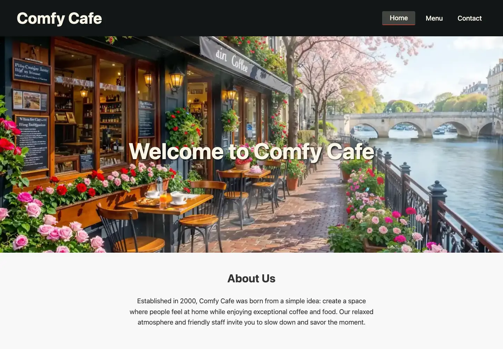
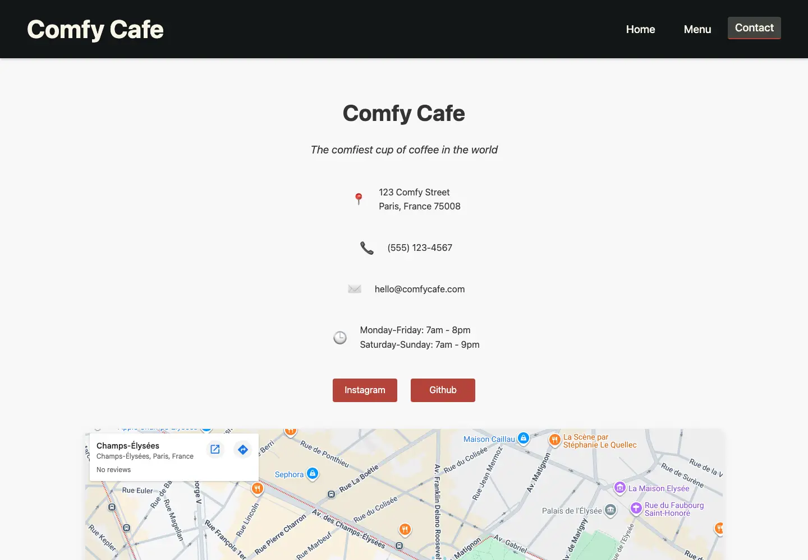

Front-end portfolio project
Comfy Cafe
A warm, responsive cafe experience built with modular JavaScript.
Comfy Cafe is a single-page restaurant website I built with vanilla JavaScript, ES modules, custom CSS, and Webpack. It combines client-side navigation, an image-rich menu, keyboard-supported item browsing, and a responsive contact experience inside one cohesive cafe brand.

The experience
A complete restaurant journey in a focused front-end project
The site moves from atmosphere and brand story to a full browsable menu, then closes the loop with location and contact information. Each view is generated in JavaScript while browser history keeps navigation feeling natural.
- Discover
- A strong visual landing page establishes the cafe’s personality, story, featured items, hours, and location.
- Browse
- A structured food and beverage menu presents pricing, descriptions, ingredients, and calories across responsive cards.
- Explore
- Item modals support previous and next navigation, keyboard arrows, Escape-to-close behavior, and responsive image sources.
- Visit
- A dedicated contact view brings together location, hours, social links, directions, FAQs, and accessibility information.
Modular vanilla JavaScript
Structured like an application, without a framework
Home, Menu, Contact, and menu data live in separate JavaScript modules. A small page manager coordinates view changes, active navigation state, browser history, mobile navigation, and page-specific stylesheet loading.
The menu is generated from reusable data rather than repeated markup. Document fragments reduce unnecessary DOM work, while session state connects featured items on the homepage to their corresponding menu entries.
- Page architecture
- ES modules for Home, Menu, Contact, and structured menu data
- Navigation
- History API routing with back and forward behavior
- Interaction
- Responsive navigation, item highlighting, modal browsing, and keyboard controls
- Loading strategy
- Critical home styles up front with menu and contact CSS loaded on demand

Performance-focused refresh
Refined for a perfect desktop Lighthouse result
A recent optimization pass reached 100 in desktop Lighthouse testing while preserving the image-led design and interactive menu.
- Images
- WebP assets, responsive source sets, targeted 640- and 1280-pixel variants, lazy loading, and a preloaded hero reduce image cost.
- Production build
- Webpack extracts and minifies CSS and JavaScript, removes production source maps, and generates cacheable content-hashed assets.
- Accessibility
- Semantic landmarks, button-based navigation, mobile ARIA state, descriptive image text, and keyboard modal controls support more ways to browse.
Technology
A deliberately lightweight stack
- Front end
- JavaScript · ES modules · HTML · CSS
- Tooling & delivery
- Webpack · Babel · npm · GitHub Pages
- Visual production
- AI-generated imagery · responsive WebP assets
Explore the finished project
Pull up a chair at Comfy Cafe.
Browse the complete menu, open individual items, and explore the responsive restaurant experience.